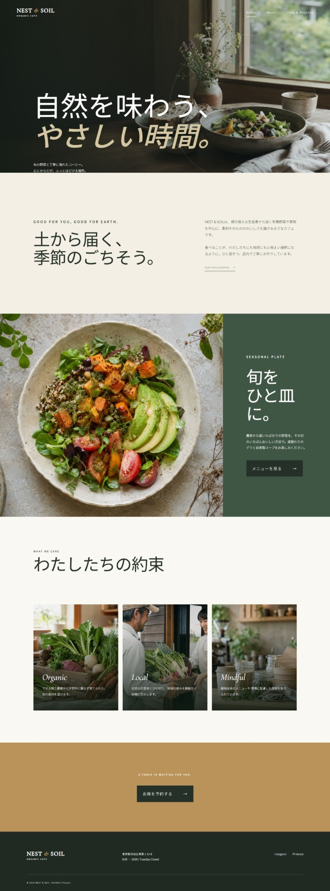
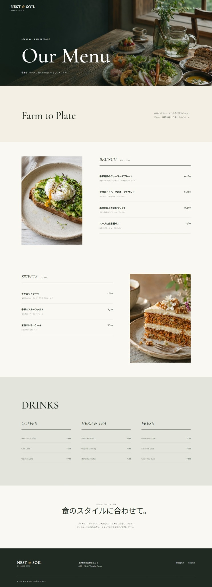
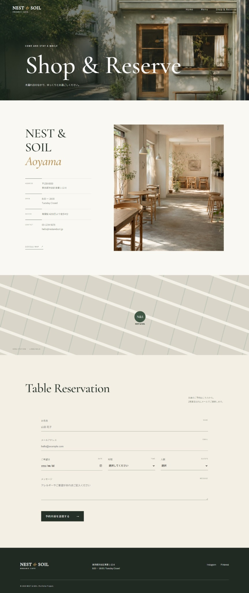

HOME
トップページ
トップ・メニュー・店舗予約まで、一貫した色と余白で設計しました。

トップページ

メニューページ

店舗案内と予約
デザイン・HTML・CSS・JavaScriptを使用した自主制作作品です。AIは構成整理、文章案、画像制作、コード確認の補助として活用し、最終的なデザインと調整は自分で行っています。
商品の魅力が最初に伝わるよう、写真を大きく配置しました。
ベージュとブラウンを中心に温かい世界観を作りました。
営業時間、アクセス、予約への導線をまとめました。